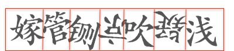

Table of Contents
1 前言

2 验证码识别思路
验证码识别的思路非常暴力5，大概就是这样：
- 去噪＋二值化
- 字符分割
- 每个字符识别
验证码的难度在这 3 步上都有反应。比如
- 噪声：加一条贯穿全图的曲线，比如网格线，还有图的一半是白底黑字，另一半是黑底白字。
- 分割：字符粘连，7和4粘在一起。
- 识别：字符各种扭曲，各种旋转。
但相对而言，难度最大的是第 2 步，分割(这一点在 2 也有体现，那些分割出的字符很多用肉眼都不易分辨 )。所以就有人想，我能不能不做分割，就把验证码给识别了。深度学习擅长做端到端的学习，因此这个不分割就想识别的事情交给深度学习是最合适的。
在评论部分，有人问项亮对知乎给出的点击倒立汉字验证码如何看？摘自他的回答：
因为整个常用汉字库其实也就6000多个字。可以根据字体库，不同的旋转，倒立，镜像，都去学习一遍。
也有人问他什么是 end to end? 这里是他的回答：
一般的任务要先通过feature engineering，从原始数据中提取特征。而如何提取特征对最终的效果很重要。而 end2end 强调的是不提特征，用原始数据。比如如果是图片的话，就用每个像素的 RGB 值。end2end 的系统，你只需要定义输入，Loss，剩下就听天由命了.
2.1 基于 CNN 的验证码识别
基于CNN去识别验证码，其实就是一个图片的多标签学习问题。比如考虑一个4个数字组成的验证码，那么相当于每张图就有4个标签。那么我们把原始图片作为输入，4个标签作为输出，扔进CNN里，看看能不能收敛就行了。
2.2 基于 LSTM+CTC 的验证码识别
LSTM＋CTC被广泛的用在语音识别领域把音频解码成汉字，从这个角度说，OCR其实就是把图片解码成汉字，并没有太本质的区别。而且在整个过程中，不需要提前知道究竟要解码成几个字。
3 图像预处理
4 训练样本
验证码图像的预处理
Figure 3: 原始知乎验证码 captcha.gif
这一步就是将验证码图像中的一串字符进行切割得到单个字符。2 在 README 中也说训练了一个分割器与识别器。 不过我看了
train下的一些分割图片，仅以肉眼可辩的标准来看，切割的确有难度，很多人眼都不太容易认得清。 当然，我不知道这样在实际操作中是否已算是分割的 “不错”。
Figure 4: 将验证码图像进行字符切割得到单个字符
训练模型
KNN/SVM
- 识别
5 算法伪代码
5.1 分割
需要准备一个用于比较的图片库 character_library 6, 将验证码分割后的字符与图片库进行比较，找出最相近的字符进行输出。
input：captcha, character_library output：predicted captcha chars := segment(captcha) for char in chars do NN(char, character_library)
这里的问题可能是：
- 分割字符。这一点上面也提到，大概与推荐系统中冷启动一样是个老大难.
- 获取比对的图片库. 如果只有数字或者字母，还好些，但是汉字，光常用字就有三千。此外还有各种形态的变化，倾斜，扭曲等。不过就知乎的验证码而言，倾斜与扭曲的程度似乎不太严重。
- 如何选择模型。最简单的 KNN, 还有其他模型等。
5.2 不分割
如果不分割大概就是项亮文章的方法了。 说实话，我不太了解，但是感觉很强大.
Footnotes:
机器自动识别验证码的原理是怎么样的？https://www.zhihu.com/question/22479139
知乎爬虫（验证码自动识别）https://github.com/moxiegushi/zhihu
Neural Net CAPTCHA Cracker http://www.cs.sjsu.edu/faculty/pollett/masters/Semesters/Spring15/geetika/CS298%20Slides%20-%20PDF
端到端的OCR：LSTM＋CTC的实现 http://www.jianshu.com/p/4fadf629895b
端到端的OCR：验证码识别 http://blog.xlvector.net/2016-05/mxnet-ocr-cnn/
如何高效识别验证码？https://www.zhihu.com/question/23026853